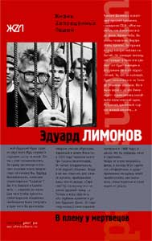
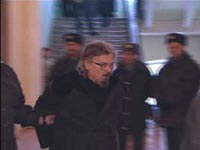
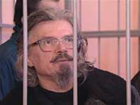

Эдуард Лимонов • В плену у мертвецов • жzл • 11.11.2002

Тюремный дневник выдающегося современного русского писателя — не только и не столько рассказ о нравах Лефортовской крепости, сколько полный страстной полемики и смелых наблюдений комментарий к нынешнему состоянию российского общества. Жанр этой книги не поддается определению – это органическое сочетание мемуаров, эссе и политического памфлета, перемежающееся яркими описаниями условий существования политического заключенного.
Пресса и контекст
Александр Орлов. Лимонов: тюрьма и суд. Два в одном
Лимонову Историческому просто фатально не везёт. Нет, я говорю не о тюрьме. Своим заточением он, сам Лимонов, хотя и постанывает, но, вне всяких сомнений, гордится. И, конечно же, ему льстит, несмотря на тяготы тюремной жизни, что его, бывшего светского хулигана Эдичку, безнадежно стареющего картонного европейского авантюриста, величают сейчас в главной тюрьме (в тюрьмах) Родины Государственным Преступником, Террористом, Главнокомандующим революционной Армии и т.д., в общем, всеми теми титулами, о которых он так страстно мечтал и писал всю свою жизнь, которых жаждал и добился, как ему кажется.
Правда, величают без особого почтения, и, в основном, только случайные сокамерники, следователи ФСБ, прокуроры и три десятка, по сути, не совсем вменяемых его соратников на воле. (Хотя по поводу невменяемости товарищей по борьбе можно поспорить, порою кажется, что они, просто, как могут, используют его прежнюю, Лимоновскую, мировую известность и нынешнюю ситуацию в своих далеко небескорыстных и неталантливых целях). Пытались о нём как о государственном преступнике №3 говорить и некоторые правительственные СМИ, но даже они, всегда бесстыдные, видимо устыдились. Но Лимонов отказывается это видеть, это его не беспокоит, он, очевидно, считает, что он на пике своей судьбы, что он уже «побронзовел», как минимум, «по яйца», он жадно ловит новости тюремного радио, запросто разговаривает с покойным Бродским по ночам, и уверен в том, что из тюремной параши ему в лицо зловонно дышит сама Всемирная История. Кабы не отсутствие бабы, он, наверное, был бы абсолютно счастлив. Но, именно, Великая История Человечества, в которую он всю жизнь пытался проскакнуть на ходу на деревянной палочке-лошадке во главе отряда тортометателей, уверяя всех, что под ним белый конь бога Революции, и сыграла с ним, совсем недавно поэтом Савенко, прескверную шутку.
Нет, Лимонов не остался незамеченным Историей, ему в награду за старания были подарены две эпизодические главы. Обе написаны на наших глазах. Первая – очень короткая, вместе с тем, поучительная новелла об одной из неисчислимых глупостей неотёсанного российского государства, в период нынешнего столкновения цивилизаций и эпох. Её утром 23 октября 2002 года начал рассказывать на специальном заседании в Государственной Думе России Генеральный Прокурор этой самой России. Он был немногословен, и доложил, что величайшей победой над мировым терроризмом, угрожающим государственному строю РФ и её соседей, были поимка и суд над страшной бандой писателя Лимонова. Страна спасена. Дружные аплодисменты в зале! Всё, казалась бы, точка. Цель почти достигнута. Поколения рыдают, И вот-вот бюст Лимонова появится в пантеоне рядом с ЧЕ…
В последних своих книгах Лимонов, опять ставший в тюрьме писателем, в мельчайших деталях и не без удовольствия описывает, как происходила эта «поимка». Ему можно верить, он почти никогда не врёт в деталях, даже если и стремиться что-то приукрасить. Сотни, если не тысячи, лучших агентов и офицеров управления по борьбе с терроризмом Федеральной Службы Безопасности, гоняются по всему пространству бывшего Советского Союза за несколькими неуловимыми группами малолетних клоунов из НБП. Клоуны дразнят чекистов, периодически расшвыривая во всех окружающих пирожные, торты, деревянные лимонки, и, в самом худшем случае, тухлые яйца и «говны», а Лимонов умело подстёгивает и убегающих и догоняющих пламенными революционными речами, замешанными, отчасти, на цитатах из Мао, Троцкого и Гитлера, а, отчасти, на книгах самого Лимонова. Иногда он и сам принимает участие в общей суматохе. Клоуны-нацболы (национал-большевики) думают, что это и есть та самая, очень весёлая, опасная революция, которая войдёт в учебники истории. А в ФСБ тоже ведутся на магическую силу слов и считают, что перед ними очень коварный враг, которого надо обязательно вывести на чистую воду, и расстрелять. В финале батальон спецназа накрывает тайную партизанскую базу вождя и его соратников на глухой Алтайской пасеке, и после многочасового обыска вместо гор оружия находит там лишь два пакета сухой манной каши. Или гречневой? Фокус-покус.
Эта двухлетняя постановка под названием “Лимоновая Зарница” или скажем “Мой путь в Историю” могла бы лечь в основу какого-нибудь милейшего французского фильма, с Пьером Ришаром в роли Лимонова. Даже на Фантомаса не тянет – такой несерьёзный противник. Более идиотской операции российских спецслужб, пожалуй, не было никогда. Два года чуть ли не весь грозный следственный отдел ФСБ России по собственной воле шёл на поводу у талантливого, но, безусловно, сумасшедшего человека, тешил его «творческие» политические фантазии, давал обильный материал для будущих тюремных книг и позволил Лимонову думать, что ему всерьёз удастся именно так реализовать в России свою «Предначертанную свыше и предсказанную им самим» Судьбу величайшего из Героев подлунного мира. Обо всём этом Генпрокурор Устинов с утра в Думе скромно умолчал. Но новелла неожиданно продолжилась вечером того же дня, когда на сцене одного из Московских мюзиклов разыгралось одно из величайших, трагических и подлинных событий новейшей истории. Неграмотный чеченский пастух Бараев, и не помышлявший о революции и вселенской славе в силу своего врождённого скудоумия, одним движением и тремя неправильно заученными сурами из Корана изменил всех нас и весь мир и отправился к Аллаху, потянув за собой две сотни трупов. И никто сейчас не возьмётся сказать, во что выльется это его движение. Заодно он, не подозревая о том, мимоходом превратил в пыль и весь миф о страшном «бронзовом» террористе Эдуарде Лимонове. Не того поймали! Всё, что делали в последние несколько лет Лимонов и его «партия-труппа», теперь, действительно, представляется как ничтожная и нелепейшая клоунада, балаган. А чеченский мюзикл – это да, сила! Правда, те, кто, не жалея сил и средств, преследовали Лимонова и просрали Бараева, сейчас, вообще, выглядят полными кретинами. Это у них, у этих «алтайских бой-скаутов», в т.ч., и у Устинова, и у Патрушева, и выше, надо спросить, может быть расскажут, как, пока они бегали за нацболами по латвийским лесам и Алтайским сопкам, чеченский спецназ несколько лет к ряду скупал оружие в Москве. Сами нацболы, в стане которых тоже царит уныние, признают, что Бараев почти убил партию Лимонова. Иными словами, они надолго, а, может быть, и навсегда, перестали интересовать прессу, со своими революционными тортиками, на фоне мировой схватки цивилизаций. Остаётся только атомную бомбу взорвать, чтоб перешибить эффект от чеченского выступления, но её в коробке от торта не спрячешь, и, к тому же, погибнуть взаправду придётся, да и денег нет, как назло. Более того, терракт в Норд-Осте, наверняка уже скоро, совсем сведёт на нет остатки российских политических свобод. А без вниман ия прессы, без телекамер и свободы такие карликовые ситуативные партии западного типа, как НБП, существовать, увы, не могут. Конечно же, можно ожидать продолжения жестокой судебной расправы над Лимоновым и его подельниками, но тогда это будет выглядеть просто как откровенно тупая и никому ненужная месть за позор. В любом случае-на дверях Большой Истории висит амбарный замок. Не произошло. Есть ещё одна глава, в которую Лимонов вписал себя более успешно. Глава Истории мировой литературы. Он даже смог своими первыми романами, в некотором роде, слегка повлиять на развитие всей западной письменной культуры начала восьмидесятых. Сказать своё особое слово, на короткое время возбудить умы. Но сейчас, после всей этой истории с НБП, он стал иным литературным явлением. Ясно, что никогда, даже в случае смертного приговора, его не будут считать писателем-разрушителем и героем типа Мисимы. Его вообще не считают больше писателем. Он стал персонажем, причём собственным персонажем, невероятной современной пародией на самого себя, Дон Кихота, идущего с ржавым автоматом в руках в атаку на турбогенератор Казахской электростанции. Правда, этот Дон Кихот порой становится похотливым де Садом, но, впрочем, и того и другого посадили в дурдом, где они в видениях и окончили свои дни. Над было отпустить его одного, преданного собой и всеми, даже близкими друзьями, в казахскую степь, казахи бы его не тронули, отобрали бы автомат и поместили в клинику, место они, наверняка, давно уже держат, а потом выслали в Париж. Возможно, суд в Саратове подобным и окончится. Дай бог! Часть проблемы заключается ещё и в том, что максимум через 10-15 лет книги и образ Эдички-бунтаря, кроме как филологам, никому интересен не будет, слишком быстро меняются мир и язык, не оставляя шансов даже самым-самым из нынездравствующих. И сам Лимонов это понимает и признаёт. Тем не менее, эти ворота, пусть не в Вечность, но в ближайшее будущее, для Лимонова пока не закрыты. Есть в мире очень много людей, что искренне полюбили его в восьмидесятых годах, когда он выскочил на свет божий с торчащим членом, как чёрт из табакерки, и просто ошарашил миллионы своими вывернутыми наружу нешуточными личными страстями. И любящие люди эти не хотят, чтобы он, гражданин вселенной и достояние их времени, великий писатель именно конца двадцатого века, сгнил в поганой русской тюрьме. Выпустите его на волю, поставьте ему при жизни памятник в центре любимого им Парижа, и в каждом городе, даже в Харькове, он этого заслужил своим немыслимым желанием попасть в Историю, можно ведь, ради исключения, ему одному, за страсть и охоту жить. Только автомат ему больше не надо подбрасывать, пусть даже очень попросит.
Александр Орлов. Новости с лимоновского процесса. Часть 1

Суд идёт! Неторопливо, скучно, вязко. Три месяца как уже. Пресса столичная вся из Саратова давно разъехалась. Нечего показывать и рассказывать. Не Георгий Дмитров и не динамично, и заседания закрытые. Правда, Лимонова разрешили снять на камеру разок, высказаться ему позволили, но он сразу на Путина погнал, сфабриковано, мол, по заказу. А сам худой такой, бледный, седой, жалкий, как говорится, укатали сивку. Пришлось прессе отказать. Обвинение читали неделю, прокурор, как пономарь, засыпал, бубня. Свидетелей обвинения стали допрашивать. Из тридцати шести приехали 28, стало интересней. И только трое из двадцати восьми дали реальные показания против Лимонова.Остальная национал-большевистская компания пребывает в удручении, почти каждый из них, хотя бы раз в этом деле, вождя предал и оговорил, задницы спасали. Сейчас, выступая на процессе, многие показывают уже совсем иное, чем на предварительном следствии, но думают, при этом, что пропал Лимонов, не удастся ему выкарабкаться. Но это частные, любительские оценки, профессионал же Беляк настроен по-другому. По его мнению, судебное следствие разваливается, убедительных доводов у ФСБ против Лимонова и части остальных подсудимых нет, что стало понятным после допросов свидетелей со стороны обвинения. Два главных свидетеля, бывшие нацболы, Акопян и Степанов, запутались в показаниях и публично признали, что следователи ФСБ оказывали на них давление, в том числе и физическое. Свидетель Акопян, который до этого утверждал, что лично Лимонов дал ему приказ пробраться в Казахстан, произвести разведку и прикупить там оружие, сейчас говорит, что термин «разведка» был навязан ему следователем. В казахский город Лениногорск он, на самом деле, ходил не по заданию Лимонова, а так, на прогулку, с целью выяснить обстановку. Прикупить хотел не оружие, хотя так ему продиктовали на предварительном следствии, а амуницию. Как выяснилось, амуницией был американский армейский бушлат, который он, действительно, хотел купить по дешёвке у казахского солдата-срочника, что дежурил на КПП местной воинской части где-то в окрестностях Лениногорска. Ранее, на предварительном следствии, Акопян утверждал, что целью готовящегося национал-большевистского вторжения в Казахстан был захват американских заложников из числа сотрудников совместной фирмы «Алтай Найтен Пауэр», кстати, на этом и строилось обвинение Лимонова в терроризме. Со слов Акопяна, ему, опять же, по заданию Лимонова, под видом корреспондента газеты «Коммерсант» удалось проникнуть в офис этой компании, изучить помещения и, даже, познакомиться с предполагаемыми будущими заложниками. Между тем, Комитет Национальной Безопасности Казахстана на запрос ФСБ прислал в суд письмо в котором, черным по белому написано, что компании «Алтай Найтин Пауэрс» давно не существует, в указанном здании никаких американцев нет, и не было уже несколько лет, осталась только вывеска, и то её скоро должны убрать. В показаниях Акопяна очень много подобных несоответствий, в частности он признал, что план возможной акции в Лениногорске, он никогда не обсуждал лично с Лимоновым. Его собеседником был некто гражданин Горшков, который, вообще, не проходит по этому делу. Горшкову Акопян и говорил, что неплохо бы было устроить в Лениногорске революцию. Свидетель Степанов из Уфы так же заявил, что в ФСБ на него давили, не давали спать и силой заставили, поехать в Москву, чтобы рассказать в штаб-квартире НПБ, что ему удалось собрать несколько добровольцев в так называемую Национал-большевистскую Армию. И хотя в Московском штабе ему ответили, что такой армии не существует, он вернулся и дал показания о том, что Лимонов формирует собственный отряд, и назвал фамилии уфимских добровольцев, которые даже не знали, что таковыми являются. Всё это происходило 30 апреля 2001 года, когда сам Лимонов уже месяц сидел в Лефортовской тюрьме. И ему уже давно было предъявлено обвинение в создании незаконного вооружённого бандформирования. То есть, показания задним числом подгонялись под пустые обвинения… Что касается лимоновского плана «Вторая оссия», на основании которого «вождя» НБП хотят привлечь за попытку свержения существующего в России строя, то, как оказалось, это была чисто теоретическая статья «о возможных вариантах развития событий в случае возникновения очагов революционных войн на территории СНГ», и хотя в ней и рассматривался «подозрительный» Казахстан, никаких конкретных рекомендаций к действиям не содержалось, подобных статей каждая уважающая себя политиическая организация публикует сотни, а эта даже не была толком опубликована. И, ко всему, автором статьи является не Лимонов, как ошибочно считали в следственном управлении ФСБ РФ, а лидер латкой ячейки НБП, гражданин Латвии Владимир Линдерман (Абель), который не имеет отношения к Делу Лимонова. Товарищ Абель собирается приехать в Саратов и выступить в суде.
Как рассказал адвокат Беляк, судья, ведущий процесс, просто пришёл в бешенство, когда узнал, что следователь ФСБ Шишкин, возглавлявший следственную бригаду по делу Лимонова, сожительствует с одной из гражданских жён подсудимых. Сергей Беляк говорит, что девушка сама в этом призналась суду, и якобы за это Шишкин обещал ей помочь, а Шишкин, покраснев, сказал, что предоставил квартиру и сожительствовал не он, а его друг из МВД, а Шишкин якобы только об этом его попросил. Кстати, на следующее заседание суда будет вызван следователь алтайского ФСБ Жданов, который добивался свидетельских показаний против Лимонова от некоторых национал-большевиков, вывозя их ночью на кладбище и, затем, производя холостые выстрелы в голову из табельного пистолета. Это часть того, что произошло и говорилось на суде по делу Лимонова в последнее время. В ближайшие дни начнётся допрос свидетелей со стороны защиты. Первым должен выступить писатель Александр Проханов. Потом начнут допрашивать самих подсудимых. Речь подсудимого Эдуарда Савенко (Лимонова) запланирована на начало декабря. Говорить он умеет лучше, чем восстания готовить, стоит послушать…
Александр Орлов. Новости с лимоновского процесса. Часть 2

Допрос свидетелей защиты на процессе по делу Лимонова начался с сильнейшего политического скандала. Буквально через день после высупления в Саратовском суде одного из ключевых свидетелей защиты по делу Лимонова, лидера латвийских национал-большевиков журналиста Владимира Линдермана, партийная кличка «Абель», власти Латвии арестовали почти всех членов рижского отделения НБП, а сам Линдерман объявлен в международный розыск, как государственный преступник, готовивший покушение на президента Латвийской республики, с целью сорвать вступление Латвиии в НАТО. С прошлой пятницы им, вроде бы, уже занимается Интерпол. Неопровержимыми, по мнению рижской полиции, доказательствами причастности Абеля к подготовке покушения на г-жу Фрайберге, являются несколько армейских детонаторов и военная форма натовского образца, якобы изъятые в ходе обыска у него дома в Риге. По версии Латвийских властей обыски и аресты в Латвии производились в рамках расследования уголовного дела о тайнике в пригороде Риги, где два года назад были обнаружены три десятка тротиловых шашек, и совсем недавно всплывшая тысяча антилатышских листовок, подписанных от имени некой подпольной террористической организации «Новая Россия».
Со слов самого Абеля-Линдермана, а так же адвоката Лимонова Сергея Беляка, действия латвийских спецслужб ни что иное, как опосредованная месть ФСБ РФ за абелевские показания на процессе Лимонова. Дело в том, что гражданин Латвии журналист Владимир Линдерман, будучи официально, от имени Российской Федерации, приглашённым в Саратовский суд в качестве свидетеля, заявил там, в суде, что не Лимонов, а именно он является автором статьи «Другая Россия», опубликованной информационном бюллетене «НБП-Инфо №3». Между тем, следователи ФСБ большую часть своих «претензий» к Лимонову, в том числе и обвинения в призывах к свержению Государственного строя в Росси, выстраивали именно на его предполагаемом авторстве «Другой России», ошибочно или намеренно, считая этот документ «пошаговым» планом подготовки начала партизанской войны в Казахстане с последующим её распространением на всю территорию бывшего СССР. Как считает защита, Абелю удалось доказать в суде, что «его» «Другая Россия» является чисто теоретическим и почти литературным произведением. А выступивший следом за Абелем писатель Александр Проханов, что был вызван в суд в качестве эксперта, заявил, что, вообще, склонен рассматривать этот «романтический» текст, как материал для написания революционной поэмы или оперного либретто. Со слов Проханова, ему даже стало обидно, что статью написал не сам Лимонов.
По одной из версий, прозвучавших в российской прессе, громкая совместная «операция» латвийских и российских спецслужб против НБП в Риге, направлена на дискредитацию Линдермана как свидетеля. Вполне возможно, что теперь, когда ФСБ получит международный ордер на его арест, Линдермана попытаются заставить отказаться от показаний, данных им в Саратове. Если это так, и ФСБ действительно работало в связке с латвийскими «коллегами», то выглядит это всё втройне отвратительно. Россия во что бы то ни стало хочет засадить в тюрьму на тридцать лет своего чуть ли не лучшего, хотя и не в меру активного, писателя. Латвия, накануне вступления в НАТО, получает «подтверждения» активной террористической деятельности нескольких миллионов «незаконно» проживающих на ее территории русских. И, в конце концов, обе, две эти вассально зависимые от Америки державы, демонстрируют своим хозяевам, как успешно они вместе и дружно противодействуют «мировому экстремистскому подполью». Конечно же, сам Абель, который, пока находится в бункере НБП в Москве, и, к слову, не спешит никуда скрываться, не признаёт предъявленные ему обвинения и считает, что из него «сознательно хотят сделать латвийского Бен Ладена». Он заявляет, что, будучи публичным политиком и правозащитником, осознавая угрозу возможных провокаций и опасность для семьи, никогда не держал дома никакого оружия и всего, что с ним связано. А рижская организация НБП, состоящая, в основном из подростков, в борьбе с идеологическими противниками, предпочитала использовать обычные торты и цветы. Как это было с английским принцем Майклом и композитором Раймондом Паулсом, и то, что спецслужбы якобы «нашли» у него дома в кресле, безусловно, было подкинуто в ходе обыска, как это обычно делается в «варварской» России, а теперь уже и в «цивилизованной» Латвии. Слава богу, пока никто ни в чём не обвинил Проханова, хотя тот предполагает, что это не исключено.
Кстати, «дача» самих показаний на суде, приведших к таким, скажем, «странным» последствиям, местами, была очень комична.
Прокурор: «Гражданин Линдерман, как следует понимать следующую преступную цитату из «вашего» произведения: «Терроризм в чистом виде себя окончательно изжил, и нам необходимо навсегда отказаться от опыта «Красных бригад» и немецкой «Красной Армии»?»
Абель: «Буквально, господин прокурор! А ваш президент недавно, между прочим, сказал то же самое, что у терроризма нет будущего. Генпрокуратура России считает иначе, надо полагать? Вы что, за терроризм?»
Прокурор: «М-м-м.»
Судья: «Гражданин Проханов, знали ли вы, что обвиняемый гражданин Франции Савенко в последние несколько лет проживал в Москве без прописки?»
Проханов: «Нет, ваша честь, иначе я бы ему руки никогда не подал!»
И ещё два нюанса, как выяснилось, буквально, на днях, главный государственный обвинитель по «Делу Лимонова» заявил в интервью немецким журналистам, что самое малое, на что может рассчитывать Лимонов—это пятнадцать лет зоны строго режима, это почти решено и согласовано на всех уровнях российской власти. Хорошо, что уже не тридцать!
А в Праге тем временем, активист Московского отделения НБП Дмитрий Бахур, это тот, что метнул когда-то яйцом в Никиту Михалкова, «влепил» тухлым помидором в физиономию самого Джорджа Робертсона. Его помидор был единственным из тех тысяч самых разнообразных отбросов, приготовленных для лидеров НАТО антиглобалистами, что достиг цели. В России Бахура, очевидно, теперь ждёт виселица. Шутка.
Александр Орлов. Интервью с Эдуардом Лимоновым. Саратовский централ
В. Как в тюрьме работается и пишется писателю? Были Достоевский, Де Сад, тот же Гумилев, они тоже писали в тюрьме. Как это все происходит? Как Вы работаете над своими книгами? Этот период вашей жизни чрезвычайно плодовитый, много книг написано, за полтора года семь, кажется, они большой резонанс вызвали в обществе, эти книги, их читают, они хорошо раскупаются. Как Вы пишете?
О. Ну, большая часть написана во время следствия и во время следственных действий за те 15 месяцев, которые я сидел в Лефортово. Там у меня была масса времени. Сейчас у меня времени меньше, поскольку идет процесс. То есть, он с перерывами, но неуклонно идет, и к процессу надо готовиться, надо тоже много писать, и я вот произнес речь на 8 часов, полтора дня я говорил. Эта речь в письменном виде существует, ее надо было написать. До этого еще ряд документов. То есть я в основном сейчас поглощен, был поглощен вот этой работой по суду. А в Лефортово за 15 месяцев, по-моему, меня всего пять раз вызвали на допросы к следователю, не считая ознакомления с делом. У меня была уйма времени, поэтому я написал столько книг без проблем. Лефортово вообще такая тюрьма, одинокая, человек предоставлен самому себе, кстати, много случаев когда люди сходят с ума, поскольку там никого не видишь. Здесь тюрьма другого плана, например если на суд-допрос ездишь, то есть на суд или на допрос к следователю, то ты имеешь возможность общаться с людьми каждые два-три часа, два-три часа в день с другими заключенными, здесь интереснее в смысле сбора материалов, например, ну запоминаешь, узнаешь. А работать в Саратовском централе, я еще и не работал – не до этого было. Вот Вам ответ на Ваш вопрос.
В. Какие-то детали, людей, безусловно, это, в первую очередь, страшно интересует, по телевизору этого обычно не показывают, не говорят о том как человек пишет в тюрьме, не касаются книг. Обсуждаются политические аспекты, вот есть экстремисты, террористы, и все. Ну, может быть, какая-то история есть или несколько историй?
О. Нет, ну нужно было всего добиваться, очень плохой был свет в Лефортово, где-то эта лампа под самым потолком, у меня очень большой минус диоптрий зрения, мне очень плохо видно было. Я попросил настольную лампу, настольную лампу мне не дали, я попросил еще раз, когда пришел прокурор по надзору, попросил еще раз. Тогда они решили вопрос следующим образом. Мне сказали: Настольную лампу мы Вам не дадим, опасно, но мы будем Вас выводить в пустую камеру, и вы там будете, сколько Вам нужно, писать, сидеть. И туда мы будем вам давать настольную лампу. В общем, оказалось больше, чем я хотел. Я сидел, и большую часть я потом работал после обеда, выходил в пустую такую хату в фуфаечке, там у меня была фуфайка с какими-то странными буквами, чуть ли, ни Христос, «Х С», что они значат, я не знаю. Хлоркой, такие, выеденные. Вот я в ней приходил, садился, застилал ее на железную койку, на шконку и писал, смеясь, сам себя я называл Солженицыным в это время, а сам скрипел… Так вот и работал. Работать было достаточно неплохо, я работал даже в момент, когда мне предъявили 31 августа, обвинение по совершенно чудовищным статьям. По статье 205-й это до 20 лет, по статье терроризм , по статье 208-й, однако я хорошо спал и работал благодаря какой-то своей собственной ментальной дисциплине, которую за годы накопил. Вот тюрьма. Хотели, я думаю, чекисты показать свою такую либеральность и позволяли мне писать. Однажды отданный приказ, он соблюдался вплоть до того, как я был переведен из Лефортово в Саратовский централ. Так вот я год с лишним я и писал. Ходил, выводили меня.
В. Глупый конечно вопрос. Вам позволяют пользоваться, скажем так, инструментами современности, ноутбуком, пишущей машинкой?
О. Ну, я никогда не спрашивал, это нелепо в условиях тюрьмы просить такие вещи. Есть какой-то контекст тюрьмы и если все нормально, ручка, карандаш или тетрадь – остальное просто ни в какие ворота не лезет. По-моему глупо, глупо просить ноутбук. Это не тюрьма, не знаю какая, французская или какая японская, я думаю что до этого еще далеко.
В. По поводу «Дневника неудачника». На мой взгляд, ну и ,не только на мой, пожалуй, это самая удачная ваша книга. Просто потрясающая. Ну, конечно, это субъективно. Я заметил в последних ваших книгах, и другие люди, кстати, отмечали, что Вы постоянно возвращаетесь к этой книжке и какие-то пророчества озвучиваете, 30 лет назад написанные. Что удивляет, они сейчас, как, впрочем, и некоторые стихи ваши почти буквально реализуются в Вашей жизни. Откуда это все? Вообще, об этой книжке хочется спросить. Что это за книжка и как Вы писали? Может тоже какие-то там нюансы.
О. Ну, она была написана в 76-ом 77-ом годах и это, скорее, такие озарения. У меня был тогда определенный жизненный кризис, я был безработным в Нью-Йорке и жил очень плохо: голодно, бедно, но не это было главное. Главное, что был период такого возвышения к новой жизни и понимания мира. То есть, где-то в 76-м году я сделал человеческое открытие, каждый человек делает такое определенное открытие, что, собственно говоря, любой биологический индивидуум никому не нужен. Я тут осознал просто космическое одиночество и погрузился в него, и в результате этого, как видите, получился ряд таких пророческих совершенно, во всяком случае, для моей жизни каких-то вот таких озарений. Это была взвинченная, такая нереальная жизнь в тот период. Результаты ее в этой книге отразились. Написать еще одну такую книгу я бы не хотел и не нужно. Одна такая должна быть. Я ее никогда не пытался повторить тем вот методом, которым она написана, вот таких коротких отрывков, я не пытался вульгаризировать себя и повторить это. Безусловно, я сверяю по ней свою жизнь часто, когда я вдруг понял, что эта книга пророческая и я сверяю свою жизнь с этой книгой. У меня и до этого бывали озарения. Кроме писательской жизни существует у каждого человека своя мистическая жизнь и она у одних развита, у других не очень. Я думаю, все люди обладают чем-то какими-то такими способностями, на самом деле все от рождения имеют какие-то такие возможности предвидения и проникновения в этот параллельный мир, метафизический мир. Но, просто, многие, за водкой и за обычной жизнью, за обыденной, просто, не замечают своих собственных.. Не сравнивают, не пытаются понять, не переосмысливают, не замечают своих собственных озарений и предвидений. Есть такое понятие как интуиция. Вот это близко. Если развивать интуицию, то можно потом многое понять.
В. Во всех ваших книжках присутствует определенная философия, по крайней мере, у меня складывается такое впечатление, что они пронизаны все определенной философией. Я просто хотел бы от Вас услышать, что это не просто так, писательство ради писательства, что есть какая-то идея, на которую все эти книжки нанизаны, скажем так, на единый стержень Лимонова. То, что с Вами происходит, на мой взгляд, это реализация, проявление этой философии, если возможно, вообще, так говорить в прикладном смысле о философии.
О. Я не особо мудрствовал, никогда не пытался выдавить из себя что-то. Если у меня был какой-то материал жизненный, стоящий того, чтобы о нем упомянуть, я это делал. Я никогда не думал о механике писательства. Вообще, я считаю, что профессия такая, она не существует, это глупо. На самом деле в высших своих проявлениях писатель это, безусловно, философ, изначально так и выглядело. Философ, учитель, а просто писать о каких-то выдуманных персонажах крайне неинтересно, это не предмет для того, чтобы делать это профессионально. Профессиональный писатель как таковой существует всего ничего. Первым профессионалом был Бальзак, в литературе до этого не было профессиональной литературы. И сейчас, я думаю, что, возможно, она просто вымрет. И вымирает. Во всяком случае, если судить по нашей, российской, состоянию российской литературы, оно сейчас крайне плачевное, на мой взгляд, просто беспомощное, никакое. И я думаю, это нормально, это хорошо. То есть, говорили о смерти романа долгое время и правильно говорили. Может быть преждевременно, опасаясь, но, в конце концов, все это умерло, уже никому не интересно, никто не верит в эти созданные искусственным воображением какие-то такие конструкции словесные. Потом многое уничтожило кино. Скажем, Бальзак там мог на три страницы описывать одну и ту же этажерку, а гостиную на тридцать страниц у него уходило, это было интересно, или какой-нибудь диван, или буфет. Если посмотреть внимательно, то он так и делал. Ну, а кино мгновенно решало эту проблему обводом камеры в несколько секунд. Потому, постепенно, собственно говоря, осталась квинтэссенция, то что можно сообщить, это мысль. Книга, как никакая другая форма, приспособлена к передаче мысли, нет ничего лучше для передачи мысли. Кинематограф, все-таки, передает эмоции, показывая какой-то ландшафт хмурый, внушается эмоции определенные. Дальше он вынужден обращаться к помощи слова, а книга это именно наилучший способ передавать мысль. Поэтому философская, все большие писатели были, безусловно, философами и диктовали миру свое мировоззрение.
В. Скажите, а вот философия бунта. Как Вы думаете, она вот в новом, изменившимся мире, а мир изменился радикально, будет ли она иметь место в России именно как философия бунта.
О. Ну, об этом даже не стоит и спрашивать, потому что это в природе человека. Человек, он не то что изменяется, происходят метаморфозы постоянные и в социуме и, безусловно, то положение вещей, которое сейчас существует, оно не такое уж старое, Развитой этот капитализм, он всего ничего насчитывает, каких-нибудь две сотни лет. А до этого было по-иному, хотя нам кажется, что это одно и то же, хотя было по-иному, и это рассыплется, также как и все остальное, понимаете. А что такое так называемая революция, вы говорите философия бунта, но это философия революции изменений, кардинальных, острых. Они всегда были в жизни общества. Революции были при персидских царях, какой-то маг Гаумато приходил, свергал определенного царя и были пока существует обозримая история эти вещи. Революция такой же законный, естественный способ существования общества, как и не революция. Человек живет на слишком узком отрезке измерений, и он не способен для себя это понять. В отдельные эпохи вдруг нам провозглашают конец развития, не развития, а конец метаморфоз этих, вот метаморфозы окончились, достигнут там коммунизм, величайшая, самая лучшая социальная система, дальше ехать некуда. Теперь нам вдруг говорят что вот эта дрянная социальная система, которая кое-как образовалась в России, что это самая прямо у нас величайшее достижение. А я не только не верю, это смешно, это рабские совершенно размышления подобного рода. Это просто говорит о том, что у людей нет времени, они слишком заняты всяким смотрением телесериалов, всяким дерьмом, семечки, что, они там еще поедают? Водку пьют? Знаете, будет то, что будет. Если ничего не будет, то тоже не страшно. И хорошо, потому что такая культура, как вот я сейчас сижу с министром культуры саратовской области. Сидит со мной в одной камере, и я сделал для себя, ну, не такое уж прямо открытие: то что называется у нас культура – это такая самодеятельность. Привозят какую-нибудь там Долину, еще чего-то показывают, и есть еще такая более высокая культура это Башмета показывают, всю эту хрень. Не культура это все. Ни то не культура, ни это не культура, поскольку все это неживые ошметки какие-то. Это не есть то, что меняет состояние человека, культура она живая всегда, она побуждает каким-то действиям, даже я бы зашел так далеко, сказал бы что культура это побудительные мотивы для действий, а то что мы сейчас имеем это достаточно жалко все. Россия как всегда, хотя мы кичимся, у нас есть такое мессианство, у русских есть такое наглое мессианство – мы лучше всех! Мы, я думаю, преуспели в военном искусстве, действительно, в свое время. И вот, когда мы остановились в развитии наших вот этих, военного искусства и прочего, то оказалось, что если внимательно посмотреть, то у нас ничего интересного нет. У нас живопись дерьмовая, появилась она где-то там робко в 18-ом веке. Она вот третьестепенная в сравнении с европейской живописью, которая уже, знаете, была, черт знает когда, какой-нибудь Боттичелли, извините, и все это 14 век. А у нас что? У нас первые крепостные художники или кто там Брюллов, Карл Брюллов, это третьестепенный, даже не итальянский, вообще общеевропейский художник. У нас нет художников – только где-то в 19-ом даже не в 19-ом, 20-ом веке российский авангардизм интересен более или менее. А так, достаточно жалкое и молодое искусство, неинтересное. Литература, тоже никаких особенных достижений. Знаете, во Франции в 16-ом веке, в 15-ом были Рабле, Вийон, а у нас первый русский поэт Тредьяковский, это уже бог знает когда, это уже чуть ли ни где-то 18 век, его били палкой при дворе, в острастку. То есть, особенно гордиться нечем. Возможно, нам еще предстоит черт знает что, конечно.
В. У вас очень много знакомых за рубежом, в России, это выдающиеся люди. Люди, которые очень сильно выделяются на фоне всего человечества. Они как-то Вам помогают в этой ситуации? Вот, были ли такие моменты, когда Вы знали какого-то человека или может, быть на него надеялись, а он оказался другим? Или, наоборот, может быть, какой-то человек Вам не очень знакомый, вдруг он проявил себя иначе? То есть, момент истины же присутствует…
О. Я не очень, ну, прям, оцениваю своих друзей в той степени, в которой они помогли мне или нет. Я не знаю. Я жил в нескольких странах, и жил в Соединенных Штатах жил 14 лет, во Франции у меня скопилось какое-то количество, безусловно, соратников, ну друзей. Друг – это нечто живое, это когда постоянно находишься в каких-то отношениях. Если оставил этих людей 10 лет тому назад, то таких отношений уже нет. Я ни от кого ничего не хотел, я ни к кому не обращался ни с какими просьбами ни из тюрьмы ни откуда. Я считал в порядке вещей, что что-то организуется. Действительно во Франции организовалась очень мощная поддержка, там выходит масса статей. Когда я последний раз читал петицию французских интеллектуалов в мою защиту, там было более ста подписей достаточно мощных, всяких таких культурных величин: издателей крупных и многих писателей лауреатов, премий 2001 года, масса премий, Медичи, премия Французской академии, премии, премии, премии и так далее. Наверное это какое-то значение может и будет иметь, посмотрим, скоро будет приговор, вначале прокурор запросит какой-то. А на самом деле я ничего не жду. Ожидать каких-то братских уз от людей, которых ты встретил на протяжении 60-ти лет жизни это не знаю, глупо что ли… Я бы, безусловно, мой принцип был такой, что я всегда вступался, когда ко мне обращались, или я знал, что есть какое-то справедливое дело я вступался. Когда судили писателя Дмитрия Быкова, я помню, за какую-то хрень. Мы принадлежим к различным политическим лагерям я пошел на его суд и выступил, когда меня спросили, и так далее, я много раз вступался за других, прежде всего выступал в защиту свободы слова – в защиту журналистов, писателей, потому что это то, чем наше общество отличается от мира физического, где исключительно насилие преобладает: кто сильнее тот и прав.
В. Многие писатели российские, я не буду называть фамилий, осуждают Вас. И не просто осуждают, почему-то в осуждениях чувствуется какая-то издевка, злорадство что ли… И вот, еще такое мнение озвучивается: Вот хорошо, что Лимонов сидит, столько много написал, ну и пусть сидит – может быть еще 20 книг напишет. Есть такая ситуация. Что вы думаете по этому поводу? Зачем они это делают?
О. Ну, у современников редко кто вызывает симпатию, такого не бывает, обычно неприятие. Во-первых, недаром же, нет пророков в своем отечестве – это очень важная вещь; а второе нет пророка в своем поколении, например люди моего возраста меня на дух не выносят и это нормально, я считаю, для такого среднего человека нормально не выносить людей которые живут иначе, которые видны, ярких людей, то есть. Меня, например, порицают за то что я создал партию и т.д. Насмешка, Вы говорите, насмешка это первая стадия признания. Понимаете? Это всегда так было. Люди смотрят на нечто, на что-то, что им не доступно или яркое и выразительное, в такой форме человек всегда встречает неприятие нового. Но, в отличие от моих сверстников, слава богу, у меня более счастливая судьба, зато меня ценят и идут за мной люди нового поколения. Это куда более важно. Те люди моего поколения мне совсем не интересны, практически: все вялые и ничего интересного они не создали, они не достаточно смелые в своей мысли, они не достаточно смелы были в своих, назовем это пышно, творениях, они неудачники, по сути дела, в любом смысле. Поэтому критика этих людей мне совершенно безразлична. Я просто смотрю на отношение последователей. Людей, которые идут за мной, поэтому это важно.
В. Вот по этому поводу. Сейчас это часто используется в пропагандистской какой-то компании. Ставятся такие акценты журналист многие, к сожалению, так говорят. Вот Лимонов. Он известный интересный человек, его, конечно, постараются спасти, и не осудить, а вот его ребята они не за что пострадают. Он их в это втянул, и он от них откажется. Глупый, конечно, вопрос откажетесь ли Вы от этих людей, которые вместе с Вами делают, в общем-то, одно дело?
О. А кто меня просит отказаться или не отказаться. Чего ради? Мне что такая цена за свободу назначена? Я всегда был человеком очень последовательным и стойким. И никогда не был легкомысленным. Отказаться от чего-то. Вы меня представляете кем там? Владельцем чего? Я не знаю, казино, что ли? Мы нужны друг другу: я нужен ребятам, они нужны мне. Такое сотрудничество будет продолжаться – это ясно. Вот я Вам говорю цинично, откровенно и просто: они нужны мне, потому что это наше будущее, а я нужен им потому что я знаю то, что им интересно, понимаете?
В. В связи с будущим. Меня Михаил Осокин – знаете такую фигуру? – так вот, он попросил задать Вам вопрос по поводу последней, а может быть и не последней, книги. Это книжка «В плену у мертвецов». По поводу ресторана «На нарах», там есть некая фраза о том, что когда Вы выйдете на свободу, то Вы обязательно откроете ресторан. Там определенная будет подаваться пища. Баланда. Видимо, он хотел спросить вообще о Ваших дальнейших планах, о казино, может быть.
О. Конечно, никакого казино, это просто остроты, никакого ресторана я, конечно, не открою. Нет у меня на это времени, не так много мне уж и осталось. Сколько мне? Шестьдесят. Здоровье у меня тьфу-тьфу, надеюсь все будет нормально. Времени у меня мало для таких экспериментов открытия ресторанов. Нет, безусловно, я не буду открывать ресторан. А что я буду делать, ну что я делал. Самим собой буду. Посмотрим. Надо еще выйти, большая борьба предстоит. В пятницу прокурор запросит, посмотрим, каким лимитами ограничится государство. Что захочет государство. Потом что даст судья. Вот это все надо увидеть и на основании этого уже строить какие-то планы. А какие на сегодня строить планы, когда у меня статьи если их применить все в совокупности, то там можно и 20 лет получить за это. Какие можно строить в этой ситуации планы? Это же не шутка, это статьи. Во время судебного разбирательства прокурор много раз вновь и вновь обращался к этим статьям. Поэтому это все конкретно и тяжело.
В. Адвокат Беляк в последнее время, и раньше мы с ним разговаривали, он говорит о том, что, в общем-то, дело литературное, по большому счету, что вот эти статьи вытекают каким-то образом из литературного текста. Вот это он буквально недавно заявлял перед телекамерами. Но Беляк – адвокат, у него работа такая – заявлять. А вы сами как считаете, причем тут ваши тексты?
О. Ну, это не только адвокат. Все кто присутствовал на процессе, те убедились, кто непрерывно присутствовал на процессе или был там на большинстве заседаний убедились, что речь шла о текстах. Адвокат или не адвокат, речь шла о текстах постоянно. Речь шла о трех документах под названием «НБП-инфо», речь шла о других статьях и в конце концов даже на одном из последних заседаний, которое представлялось обвинению, чтобы принести свои доказательства, даже прокурор внес просьбу приобщить к делу иск о закрытии газеты «Лимонка». Закрывалась газета по поводу моих статей, глав из книги, написанных уже в тюрьме. То есть, это абсолютно верно, на две трети, только одна треть – статья 222-я имела дело с реальностью: с реальными автоматами, с реальным оружием. Они говорили о текстах, о параграфах, о том, кто автор этого текста, кто автор такого текста и так далее. Это роднит мое дело с делом Чернышевского. Потому что там тоже, как ни странно. Я хорошо это изучал и знаю, он был арестован 7 июля 1862 года за прокламацию, называлась она «Барским крестьянам», прокламация эта даже не была написана им самим. Она была написана Михайловым. Затем, был провокатор Костомаров, который якобы собирался отпечатать эту прокламацию в типографии. Было письмо, перехваченное на границе от Герцена адресованное Серно-Соловьевичу, в котором упоминался Чернышевский. Речь шла о публикации Современника в Женеве или где-то там на Западе. То есть у нас тоже есть и перехваченное письмо на границе у гражданина Франции Мориньяка. Удивительно и поразительно, что 140 лет спустя тот же фактически прецедент. Это говорит о чем? Это о многом говорит и среди прочего, что после, вдруг, советской власти, после революции Великой октябрьской, 70-ти лет диктатуры пролетариата, мы вдруг видим, что наши доблестные спецслужбы обратились к методам 140-летней давности. У Чернышевского, там существует в деле 130 полицейских донесений по наружному наблюдению. За ним велось наружное наблюдение с осени 1861 года по июль. Два года он содержался в Петропавловской крепости, где написал свое знаменитое Что делать? и потом был осужден на 20 лет каторги. Фактически, государство угробило его. Причем, он был не просто там какой-нибудь, он был революционный демократ, как Ленин его назвал. Он был революционным демократом. Это был один из самых блестящих людей своего времени. И вот теперь мы вдруг обнаруживаем через 140 лет совершенно идентичные методы. Это говорит о средневековости того вот режима подавления, который сейчас воцарился. Если судят за подобные вещи, понимаете, потому что мы привыкли что судят, вот вокруг дела их много в тюрьме: убийство, 105-я статья часть такая-то, присутствовал человек или нет часть вторая если их было двое или несколько. Это конкретика. А когда речь идет о параграфах и текстах, где заметьте нет ни одного ни призыва ничего нет такого. Нет. Ни одна экспертиза не утверждает этого, речь идет даже о толковании текстов, анализ это или же просто статья скажем, это анализ призывов нет. Но, тем не менее, это все слеплено, склеено соплями и поступило вот в суд. К сожалению, это все реальность и это говорит о том, что вот у нас никакого не произошло социального прогресса. Нет его. 140 лет может быть они где-то и были в мире, прокатились, а у нас нет. У нас сейчас опять тоже самое.
В. Я когда к вам засобирался, некоторые знакомые журналисты стали расспрашивать, а правда, что у Лимонова тюремная кличка «Энерджайзер»? А правда, что он сидел с Радуевым, и, что от Радуева, якобы, все тюремные телевизоры звенели и ломались? Особенно интересуются, что такое пресс-хата? Это все в книжке В плену у мертвецов ест, конечно, но не все читать любят, тем более, тираж раскуплен на корню. Буквально несколько слов об этом.
О. Радуев сидел надо мной, я сидел в 46-й в Лефортово, а он сидел на верху в 101-й. И со мной сидели фактически два человека, которые вместе с ним в одной камере сидели. Меня с Радуевым не посадили, хотя я как писатель хотел и даже просил там следователя. Слушай, может быть, сделаешь мне, чтобы я посидел там месяц, книгу написал. Мне интересен типаж, неприятен, может быть, но интересен. У Радуева действительно, он перенес операцию в Германии, и это простая вещь, скажем, когда операция ноги туда вставляют временно, чтобы кость наросла, вставляют металлическую пластину и привинчивают, чуть ли, не к кости шурупами. Когда надкостница разрастается и восстанавливается, то потом ее надо удалять. Это делается при всяческих операциях и в голове тоже, выдалбливают кусок черепа. Ему надо было вынуть это, но так как он находился в тюрьме, и действительно поскольку это была металлическая пластина, а камера маленькая, там в Лефортово такие же камеры, как и здесь, то проходя мимо телевизора он действительно фонил, очевидно, это была титановая пластина, и просто смещалось изображение. Ну, это, скорее, такая чисто позиция наблюдателей. Что там еще?
В. Почему Вас называли «Энерджайзером»?
О. Поскольку я достаточно энергичный человек. Особенно сидя в Лефортово, я на прогулки постоянно ходил, никогда не пропустил. На прогулках постоянно или бегал или отжимался, в камере отжимался. Сейчас я меньше это делаю, просто поднадоело это. Потом еще я никогда не сплю днем. Люди спят безбашенно, я стою, работаю, пишу, книги читаю, здесь уже читал тома Ленина, меня интересовали письма Ленина, я 49 том читал, делал выписки для себя. Те, кто просто лежит и ждет пока время пройдет, конечно для них это казалось странным и так вот я якобы слишком энергичный человек. Я для себя считаю, что это нормально, тем более чего зря время терять, можно что-то узнать за это время.
В. А что такое пресс-хата?
О. Существует такая практика, якобы в тюрьмах. На себе я этого почти не испытывал, поэтому говорю то, что слышал. Это когда человека помещают в такую ситуацию когда из него надо выбить какие-то показания, помещают с такими крутыми ребятами, которые из него эти показания выбивают. В одну камеру и они в соответствии с обращениями, что написано например в тюремных правилах поведения и прочее, что нельзя притеснять сокамерников, они вот притесняют сокамерников, стараясь так чтобы никто не видел. В моей книге там написано, что вот этот вот Леха, там есть у меня, по-моему в одной из первых глав, добился признания, чистосердечного признания. Бил чечена Французова и тот дал признание. Это знала вся тюрьма Лефортово.
В. К свободной прессе никакого отношения?
О. Это пресс. Имеется в виду прессинг. Это, очевидно, иностранное слово, то есть выбивают показания. Сейчас, говорят, этого нет. Одновременно по желанию, я знаю что в Лефортово вдруг собирали камеру из 6-ти человек, там обычно по три, ну и помещали туда человека, там есть две хаты по 6 человек. Во всяком случае, так говорят люди. Вы меня понимаете? То есть оказывается воздействие. То ли физическое, то ли моральное тоже.
В. Да понимаю. У меня к Вам такая просьба. Вы не могли бы в телекамеру прочитать какой-нибудь отрывок из «Дневника неудачника».
О. Я не люблю. Все это искусственно, что ж я буду читать, тем более я не помню. Вы думаете, я что, хожу и в голове запоминаю?
В. Я могу Вам дать книжку и вы прочитаете.
О. Да нет, не стоит. Я ее написал, уже прошло, черт знает, сколько лет. В 76 году, дай Бог, сколько же? 27 лет, что ли.
Лев Данилкин. Рецензия на книгу Эдуарда Лимонова «В плену у мертвецов» (Афиша)
Лимонов, однако, не просто фиксирует впечатления – Лимонов пишет историю с большой буквы. Он явно понимает (и не раз о том проговаривается), какую традицию наследует и в какой ряд будет вписан (Сад, Селин, Жене); он знает, что гниющий в узилище писатель – фигура стократ более выигрышная, чем писатель, попивающий коньячок на госдаче, потому дневник этот – не просто дневник, это кульминация всей карьеры, тронная речь. Воображаемый (и страх какой здесь завистливый) Бродский признает: обскакал ты, Эдик, нас с Исаичем, это тебе не маслице-фуяслице. «Вечность льнула не шипящим прибоем, а стремительным домкратом, это было бы не так важно – биография состоялась, теперь все дозволено.
Максим Семеляк. Рецензия на книгу Эдуарда Лимонова «В плену у мертвецов» (Ведомости)
В новой книге Лимонов дал наконец волю и воображению тоже. Мозг политкаторжанина порождает безумные и одновременно педантичные фантомы – Лимонов, всегда близкий по духу сюрреалистам прошлого века, наконец приблизился к ним и непосредственно в творчестве. Иные страницы из „В плену у мертвецов” вполне могли бы быть обнаружены у Андре Бретона или раннего Луи Арагона. Дикие порнографические фантазии на тему бывшей любовницы сменяются беседой с духом Иосифа Александровича Бродского, которого Лимонов на правах старинного приятеля и соперника вызывает из царства мертвых. Эти диалоги с петлей на шее, пожалуй, самое ошеломляющее и зашкаливающее место книги. Мне, честно говоря, затруднительно представить себе любимого поэта, характерным голосом произносящего фразу: “Это тебе не маслице-фуяслице, круче, чем у Исаича, портянку его дери”. Но с другой стороны, я не был знаком с Бродским, а Лимонов – еще как.
Николай Смирнов. Рецензия на книгу Эдуарда Лимонова «В плену у мертвецов» (gazeta.ru)
Лимонов не забывает и о своем фирменном пафосе. Он не хуже своих критиков отдает себе отчет, что на самом-то деле пишет всю жизнь единственную книгу под названием «Эдуард Лимонов». Как понимает и то, что если есть в современной России один человек, который должен сидеть в тюрьме в силу всей своей жизненной стратегии – это Савенко Эдуард Вениаминович, 1943 г. р. Возможно, именно поэтому в книге нет жалоб на тюремную жизнь – есть осознание себя как «наполовину бронзового» героя и твердая уверенность в доброй народной памяти после возможной смерти в заключении. И ссылки на «Хагакурэ» – вовсе не кость, брошенная интеллектуалам. Постоянно подчеркивая, что ежедневно выходит на прогулку не только ради физической формы, но и чтобы выглядеть несломленным в глазах охранников, автор буквально проводит в жизнь принципы бусидо: нарумяниться перед боем, чтобы враги не заметили, если ты вдруг побледнеешь в минуту опасности.
Рецензия на книгу Эдуарда Лимонова «В плену у мертвецов» (Комсомольская правда)
Чу, видите свет?! Это нимб вокруг головы лефортовского узника, «железного революционера», а некогда писателя-хулигана Савенко Эдуарда Вениаминовича. Теперь его удел – тюремные дневники. Савенко-Лимонов подробнейшим образом описывает соседей по камере, стены, изгаженные расплющенными трупами мух и комаров, шконки, допросы, носки на веревке, особенности лефортовской архитектуры и своих товарищей по несчастью – Салмана Радуева и Анатолия Быкова, «стукачей» и простых ЗК, собственные эротические фантазии и возникшие на нарах фантасмагории. Он беседует с Иосифом Бродским, передает приветы Илье Лагутенко, раздражается от «Руки вверх!» и слушает лекции Зигмунда Фрейда про анальное, оральное и генитальное начало. Он не просто сиделец – великомученик. Лимонов, по мнению Лимонова же, – маркиз де Сад, а Лефортово – Бастилия. Он все вытерпит и переживет. Если, конечно, те, от кого это зависит, прочтут последние несколько страниц книги, содержащие ходатайство заключенного Савенко (уголовное дело №171 по статьям «терроризм» (часть 3 ст. 205) и «создание незаконного вооруженного формирования» (часть 1 ст. 208) о помиловании в связи с полной невиновностью.
Дмитрий Черный. Рецензия на книгу Эдуарда Лимонова «В плену у мертвецов» (Независимое обозрение)
«…тюрьма – довольно серьезное испытание для любого, кто проходит его: «качается», постоянно, пишет, не дает себе угаснуть. Его мускулистый стиль не изменился – здесь мат соседствует с эстетизмом, ярчайшие политические деятели XX века зачастую получают маргинальные, сленговые эпитеты. Для него нет идеологических авторитетов или приоритетов, есть просто вдохновляющие его вспышки реальности – герои революций, исторические персонажи и образы: здесь нет деления на левых и правых, это просто «священные монстры» Лимонии – вкусовщина, проще говоря. В этой книге нет заговора или новой идеологии, способной противостоять тому порядку, который автор время от времени (политически неквалифицированно) критикует. Зато здесь есть убийственный, откровеннейший соцреализм застенка, который будет интересен широкому читателю и малоприятен власть предержащим. Тюрьма – лучшая трибуна для человека с именем. В тюрьмах ковались не только характеры революционеров, но и теоретические основы революций. Лимонов же использует ситуацию, сильно привлекшую к нему общественное внимание, не для создания революционной теории, а все для тех же жизненных репортажей и для «проживания» нового образа. Каждый воюет доступным ему оружием. Оружие Лимонова – его слово и наблюдательность, его въедливая заинтересованность подробностями новых» открывающихся ему миров».
26 февраля в ЦДЛ прошел юбилейный вечер посвященный 60-летию Эдуарда Лимонова
На литературные, а тем более на юбилейные, вечера писателей и поэтов в ЦДЛ сейчас мало кто ходит. Ни на почивших не ходят, ни на еще живых. От раза к разу, одни и те же «творческие старухи» и несколько десятков «стареющих юношей» из числа вечно пьяных, но подающих большие надежды. Смерть и уныние в Русской Литературе. Сам Дом Литератора, уже давно не дом, собственно, литератора, а банальный «club» для мелкобуржуазного московского мещанства с «художественными» претензиями. Выпить-закусить под портретом Пастернака-Бродского и т.д., и т. п… Bulgakov dream…Самих забулдыг-писателей-поэтов сюда пока пускают иногда, чтобы какую-то видимость профильной деятельности сохранять, но на дверях обильно—стращающие объявления, типа: «Писателю такому-то впредь, за пьяный дебош и недостойное поведение, вход в Храм запрещен!»… «Поэта такого-то….не пускать!»
Тем не менее, 26 января пришло столько народу, что в большом зале ЦДЛ, или как его еще величают, одном из самых престижных залов столицы, публика стояла в проходах. Человек шестьсот-семьсот, а может быть и больше. Самые разные люди пришли с самыми разными политическими и литературными пристрастиями. Проханов, Мамлеев, Слоним, Кормильцев, даже В.В. Жириновский зачем-то притащился. Не было только никого из Пен-центра, хотя, может, и были, да в толпе затерялись. Половина зала—не старше двадцати пяти. Работники ЦДЛ диву давались. Такого здесь лет десять, как минимум, не было, чтобы зрители, по собственной воле, три с половиной часа, стоя, внимательно слушали выступления со сцены и не расходились. Если опустить подарок от Березовского в самом начале, речь Жириновского и призывы немногочисленной околопрохановской пенсионной тусовки, выйти на Волгу и послушать, чей там стон из саратовского узилища раздается, все было очень достойно, красиво, умно и искренне. Талантливые и порядочные русские люди собрались Великого французского писателя поздравить с днем рождения, как и должно быть. Жаль, вот, только,— сам Француз отсутствовал, ему бы, наверняка, понравилось.